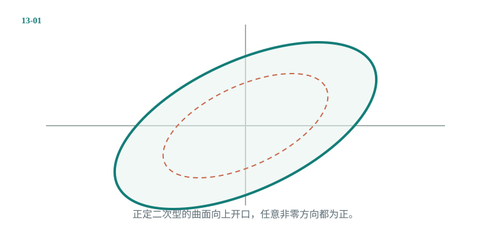
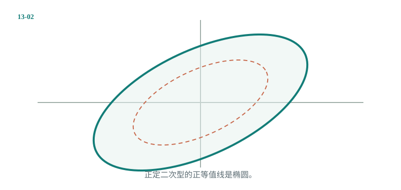
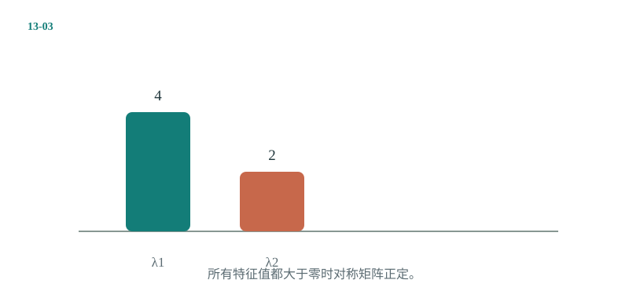
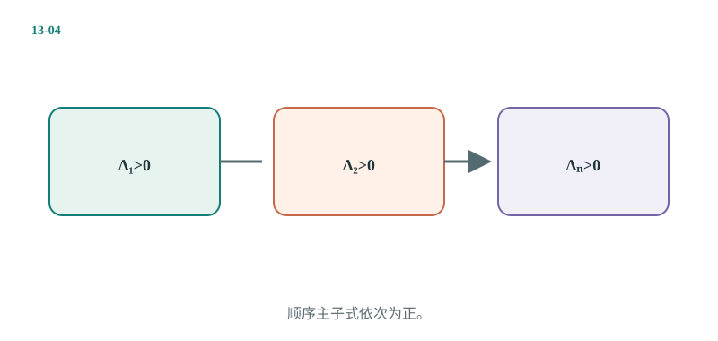
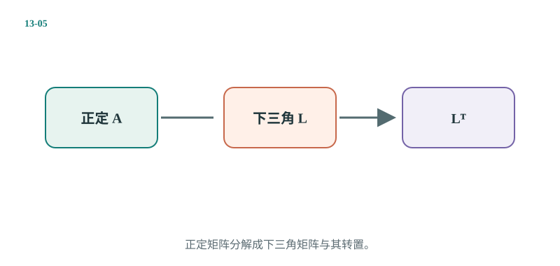
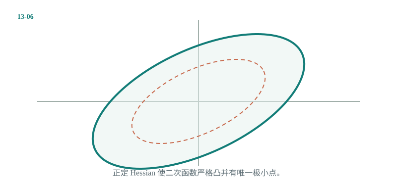
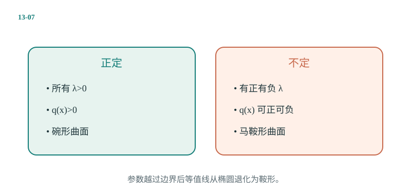
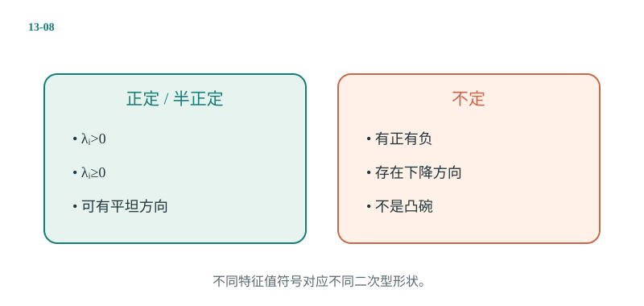

正定矩阵与二次型：从椭圆到能量函数
一个二次型在所有非零方向都为正，意味着什么？它的等值线是椭圆，曲面像碗，优化问题有明确的曲率。
01二次型把矩阵变成一个标量函数
给定实对称矩阵 A，定义 q(x)=xᵀAx。输入是向量，输出是一个实数。矩阵的非对角元素会产生交叉项，因此二次型不仅记录每个坐标方向的平方，也记录不同坐标之间的耦合。
正定的定义很强：对每个非零 x，都有 xᵀAx>0。只在某些方向为正还不够；必须没有任何非零方向让函数降到零或负数。

02二维正定二次型的等值线是椭圆
取 A=[[4,2],[2,3]]，则 q(x,y)=4x²+4xy+3y²。配方得到 4(x+y/2)²+2y²，因此除原点外严格为正。等值线 q(x,y)=c（c>0）是椭圆。
椭圆的主轴不一定与坐标轴重合。它们沿 A 的特征向量方向；特征值越大，对应方向的等值线半轴越短。

03特征值把正定性变成符号检查
若 A 对称，可正交对角化 A=QΛQᵀ。令 y=Qᵀx，则 xᵀAx=Σ λᵢ yᵢ²。因为正交变换不会把非零向量变成零，所以这个表达式对所有非零 x 为正，当且仅当每个 λᵢ 都为正。
这条结论依赖 A 为实对称矩阵。

04Sylvester 判据：只检查顺序主子式
对实对称矩阵，Sylvester 判据指出：所有左上角 k×k 主子矩阵的行列式都为正，当且仅当 A 正定。对 2×2 矩阵 [[a,b],[b,c]]，只需检查 a>0 与 ac−b²>0。
本例的首个顺序主子式为 4，完整行列式为 8，因此正定。注意这叫顺序主子式；不能只检查一个行列式。

05Cholesky：把正定矩阵写成平方
正定矩阵可以进行 Cholesky 分解 A=LLᵀ，其中 L 是对角线为正的下三角矩阵。对本例，L=[[2,0],[1,√2]]，乘回去得到 [[4,2],[2,3]]。
于是 q(x)=xᵀLLᵀx=‖Lᵀx‖²。只要 L 可逆，x≠0 就意味着 Lᵀx≠0，所以平方范数严格大于零。

06正定性与优化：碗底为什么是唯一极小点
考虑二次函数 f(x)=½xᵀAx−bᵀx，其中 A 对称。梯度为 Ax−b，驻点满足 Ax=b。若 A 正定，则 Hessian 就是 A，曲面在每个方向都有正曲率，因此这个驻点是唯一的全局极小点。
如果 A 只有半正定，可能存在平坦方向；如果 A 不定，曲面可能像马鞍。

07交互：改变交叉项，什么时候不再正定
固定 A(c)=[[4,c],[c,3]]。第一个顺序主子式恒为 4，第二个为 12−c²。因此只有当 |c|<√12 时矩阵正定；边界处半正定，越过边界后变成不定。
滑块同步更新行列式与判定。这是 2×2 对称矩阵的完整判据，不是任意高维矩阵的快捷规则。

正定性边界实验
A(c)=[[4,c],[c,3]]。改变 c，观察第二顺序主子式 12−c² 的符号。
det(A)=8.00；正定
08三种形状：正定、半正定与不定
正定意味着所有特征值严格大于零；半正定允许零特征值，等值面可能沿某些方向变平；不定意味着正负特征值同时存在，曲面出现上升和下降方向。
判断时先确认矩阵是否对称，再选择特征值、顺序主子式或 Cholesky 等价判据。

自测与思考
矩阵 [[1,0],[0,0]] 是正定还是半正定？为什么只检查 det(A)=0 不能直接判为不定？
延伸阅读与来源
- MIT 18.06 · Symmetric Matrices and Positive Definiteness。正定矩阵与对称矩阵的特征值性质。
- MIT 18.06 · Positive Definite Matrices and Minima。正定性与函数极小值。